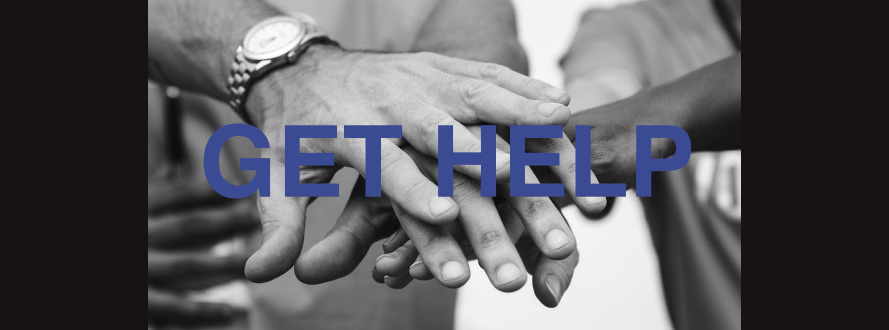

Hope.org

Access Treatment
New York State is making treatment more accessible to those in need. The state has a searchable listing of NYS OASAS-certified substance use disorder treatment facilities, including facility location and contact information. There is also a tool to search for treatment beds that are available now.
Find a treatment or prevention provider
Find a treatment bed that is available now
Additional Services
24/7 Open Access Centers
24/7 Open Access Centers help direct people to addiction treatment services by delivering immediate engagement, assessment, and referral services for people suffering from a substance use disorder. Open access centers are currently located in Rochester, Staten Island and Syracuse. View a list of Open Access Centers.
Centers of Treatment Innovation (COTIs)
COTIs are OASAS certified providers focused on engaging people in treatment through mobile clinic services — bring treatment staff into un/underserved areas; expanding tele-practice sites; and enhanced peer outreach and engagement within the community. View a list of COTIs.